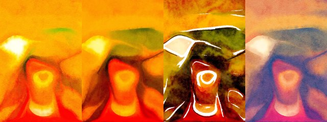

← Async Art — living works · all collections
by Hulki Okan Tabak · Async Art Master #1894 · four-phase · time rule: UTC
Updates four times a day to reflect sunrise / day / sunset / night cycles.

Sunrise 06:00–06:59 · Day 07:00–17:59 · Sunset 18:00–18:59 · Night 19:00–05:59 (UTC)
The full-size files live on IPFS; each is linked on three public gateways, in the order to try them (gateway.pinata.cloud, ipfs.io, dweb.link). Every line says what our own check found: 5 we keep this file pinned, 5 our own copy, pinned here and verified on upload.
bafybeidd3cpox… gateway.pinata.cloud · ipfs.io · dweb.link — our own copy, pinned here and verified on upload, checked 2026-09-22bafybeicpfzk5a… gateway.pinata.cloud · ipfs.io · dweb.link — our own copy, pinned here and verified on upload, checked 2026-09-22bafybeia7gslem… gateway.pinata.cloud · ipfs.io · dweb.link — our own copy, pinned here and verified on upload, checked 2026-09-22bafybeig52ltxv… gateway.pinata.cloud · ipfs.io · dweb.link — our own copy, pinned here and verified on upload, checked 2026-09-22bafybeig4qdkza… gateway.pinata.cloud · ipfs.io · dweb.link — our own copy, pinned here and verified on upload, checked 2026-09-22Qmacc3c7uZ7kFT… gateway.pinata.cloud · ipfs.io · dweb.link — we keep this file pinned, checked 2026-09-24 11:46QmRcEctimCV9VW… gateway.pinata.cloud · ipfs.io · dweb.link — we keep this file pinned, checked 2026-09-24 11:46QmRcEctimCV9VW… gateway.pinata.cloud · ipfs.io · dweb.link — we keep this file pinned, checked 2026-09-24 11:46QmXUW1jbPGbd3W… gateway.pinata.cloud · ipfs.io · dweb.link — we keep this file pinned, checked 2026-09-24 11:46QmUHE5qX2yc8md… gateway.pinata.cloud · ipfs.io · dweb.link — we keep this file pinned, checked 2026-09-24 11:46QmbnJ39JEWBrb6… gateway.pinata.cloud · ipfs.io · dweb.link — we keep this file pinned, checked 2026-09-24 11:46Have you ever felt that lonely when even your thoughts left you for real and you wondered if they would ever come back and when they did if they did you think they did and how did you if you could not think but lets say that it was so Did You actually think they were still yours? A Penny for Your Thoughts minted June 2021 on Async Art by Hulki Okan Tabak
async.art · OpenSea · Etherscan
Generated archive pages. Content identifiers point to the public IPFS network.